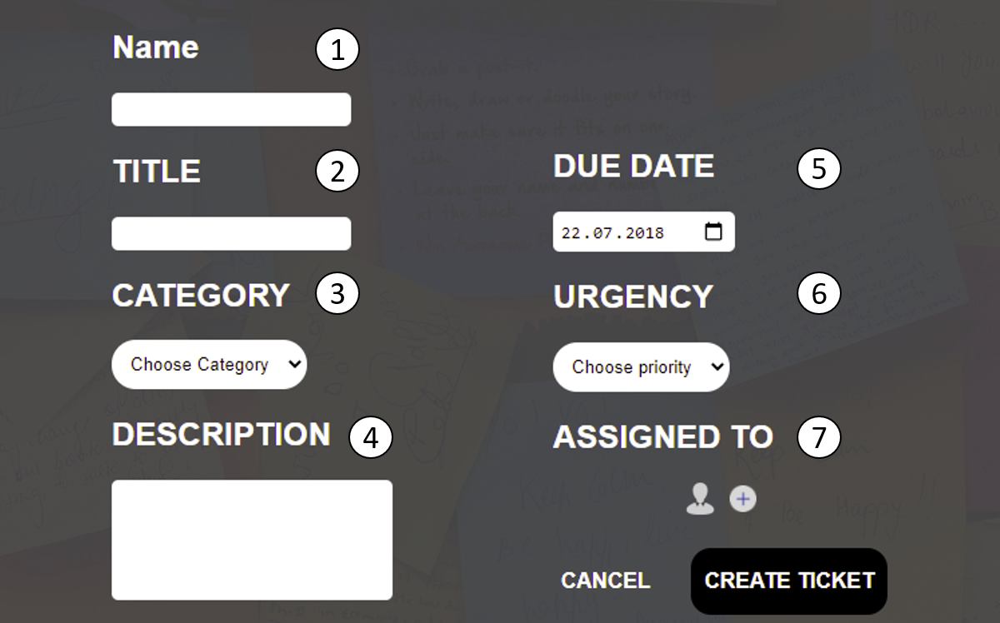

1. At first you have to enter a Name to your task
2. In the second window you have to enter a Title of your task
3. Choose your Category
4. Enter your task description
5. Choose the due date
6. You can choose the importance of your task
7. In this step you can assign your task to a user